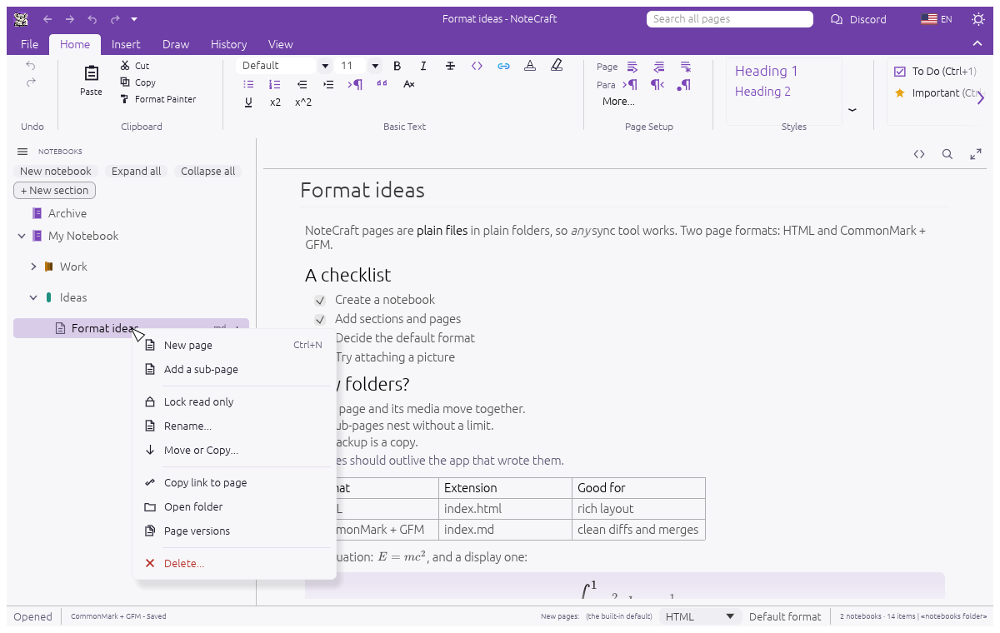

לחיצה ימנית מציעה מה אפשר לעשות הלאה, והאפשרויות תלויות במקום שבו לחצתם. קיצורי מקלדת מעבירים בין הדפים בלי העכבר.

| איפה לוחצים לחיצה ימנית | מה התפריט מציע |
|---|---|
| דף בניווט | דף חדש, הוספת תת-דף, נעל לקריאה בלבד או בטל נעילה, שינוי שם, העברה או העתקה, העתקת קישור לדף, פתיחת תיקייה, גרסאות הדף, מחיקה |
| טקסט הדף | הדבקה, גזירה והעתקה, ההוספות (טבלה, קישור, משוואה, תאריך ושעה, תמונה, קובץ), ונעל לקריאה בלבד או בטל נעילה. דף נעול מציע רק העתקה ובטל נעילה |
| מקום ריק ברשימת הדפים | דף חדש, ונעל לקריאה בלבד או בטל נעילה לדף הפתוח |
| מקום ריק בניווט | מחברת חדשה, פתיחת תיקייה, הצגת תיקיית המחברות, ונעל לקריאה בלבד או בטל נעילה לדף הפתוח |
נעל לקריאה בלבד שומר את הנעילה בתוך הדף עצמו, ולכן היא נשארת עם הדף כשמעתיקים או מסנכרנים את התיקייה שלו. דף נעול שומר על הכותרת ועל הטקסט שלו: תיבת הכותרת אינה מקבלת הקלדה, ועריכה נדחית. בחרו בטל נעילה מאותו תפריט כדי לערוך שוב.
הבא: מימין לשמאל.